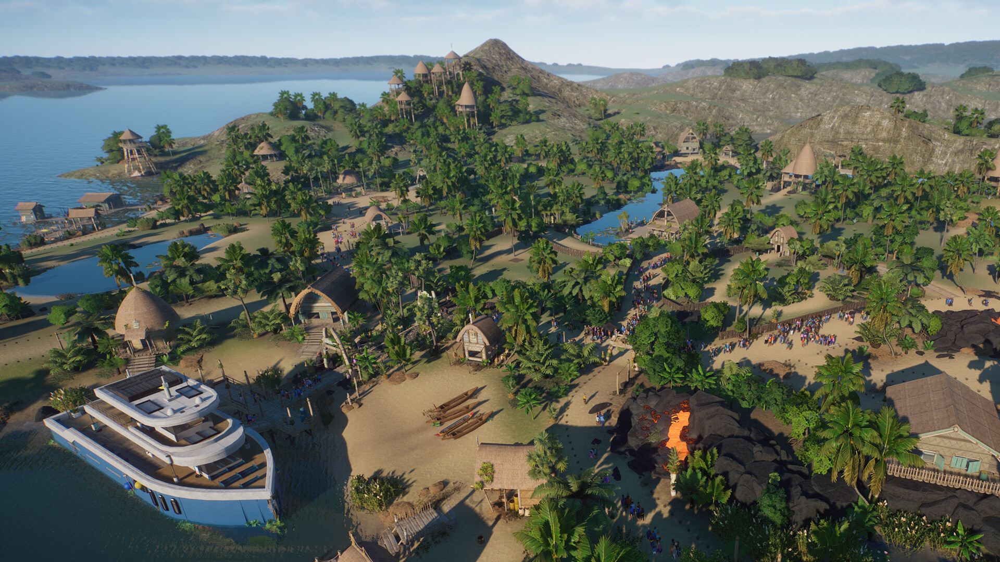
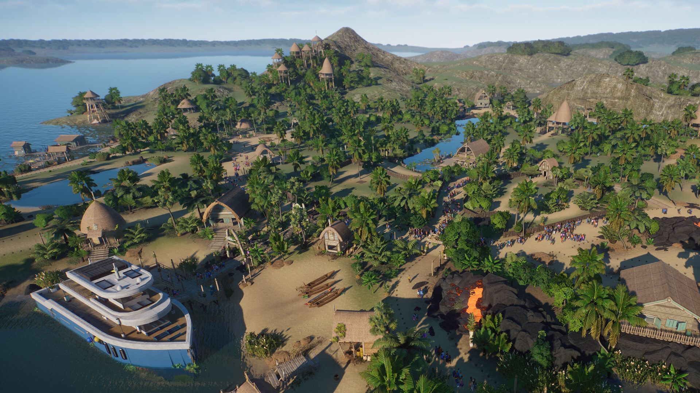

Data wydania: 19 września 2023
Cena pakietu: 35.99 zł
Oficjalny zwiastun DLC Oceania Pack
Wszyscy na pokład i cała naprzód ku rozszerzeniu Planet Zoo: Pakiet Oceania! Odkrywaj zapierające dech w piersiach archipelagi i doświadczaj piękna oraz kultury słonecznych, pacyficznych wysp. Znajdziesz tu pięć wyjątkowych gatunków
zwierząt – niektóre człapią po piaszczystych plażach, inne ukrywają się w bujnych lasach – a także ponad 200 zupełnie nowych elementów scenerii inspirowanych kulturą Polinezji. Sprawdź swoje umiejętności zarządzania zoo w nowym scenariuszu,
który skupia się na ochronie dzikiej przyrody na rajskich wyspach.
Galeria zdjęć


 


O tym DLC
Poznaj nowe, cudowne zwierzęta pochodzące z dzikich wybrzeży Oceanii: kiwi północny, diabła tasmańskiego, pingwina małego, kuokę i rudawkę okularową. Obserwuj, jak niewielki kiwi północny ostrożnie szuka pożywienia i odkrywa nowy dom w Twoim zoo. Nasłuchuj imponujących wrzasków hałaśliwego diabła tasmańskiego – pewnie znów przemierza siedlisko w poszukiwaniu okazji do walki. Zachwyć się koloniami setek pingwinów małych, obserwując, jak zwierzęta człapią po okolicy lub odpoczywają na brzuszkach. Daj się uwieść rozbrajającemu uśmiechowi kuoki i podziwiaj dostojną rudawkę okularową, gdy ta wzbija się w powietrze i eksploruje ekspozycję.
Ponad 200 wspaniałych elementów scenerii
Wzbogać swoje zoo o mnóstwo nowych, przepięknych elementów scenerii, które nawiązują do regionu Oceanii. Podczas ich tworzenia wykorzystuje się głównie naturalne materiały takie jak suche liście, drewno, włókna i tkaniny oraz wzorzyste, rzeźbione w drewnie dekoracje i barwne ozdoby z kwiatów. Żywe kolory, z których słynie ten region, jeszcze bardziej uwydatniają ich naturalne piękno. Nadaj krajobrazowi nieco bardziej figlarny charakter, używając rzeźbionych ozdób tiki. Każda z nich ma inny wyraz twarzy, który można dodatkowo personalizować! Szczęśliwe twarze można ozdobić koroną z liści lub barwnym wieńcem lei, a także przemienić je w pochodnie, które rozświetlą wieczorami Twoje zoo. Oprócz tych wspaniałych elementów czekają także imponujące skały wulkaniczne, świecąca w ciemnościach sztuczna lawa i nowa roślinność, w tym wyjątkowa palma nikau i górująca nad głowami gości paproć Angiopteris evecta. Dzięki tym oszałamiającym dodatkom stworzysz przepiękne zoo, które zachwyci zarówno gości, jak i zwierzęta.
Ścieżka dźwiękowa
Oryginalna ścieżka dźwiękowa złożona z 4 wyjątkowych utworów. Możesz słuchać tej wspaniałej muzyki, kiedy tylko zechcesz.
Posłuchaj Oceania Pack
Pasjonujący scenariusz Kampanii
Powiedz „hayo” znajomym postaciom! Spotkaj się ponownie z Berniem Goodwinem i jego córką w ramach zupełnie nowego scenariusza kampanii, który rozgrywa się w rezerwacie przyrody Goodwinów na skąpanej w słońcu rajskiej wyspie. Emma przedstawiła Ci plany stworzenia nowego, bardziej osobistego ogrodu zoologicznego, który ma powstać przy wsparciu jej ojca. Czy Bernie zdecyduje się oddać stery i pozwoli Emmie zbudować zoo od podstaw? I, co ważniejsze, czy zdołasz wesprzeć ten rodzinny projekt?